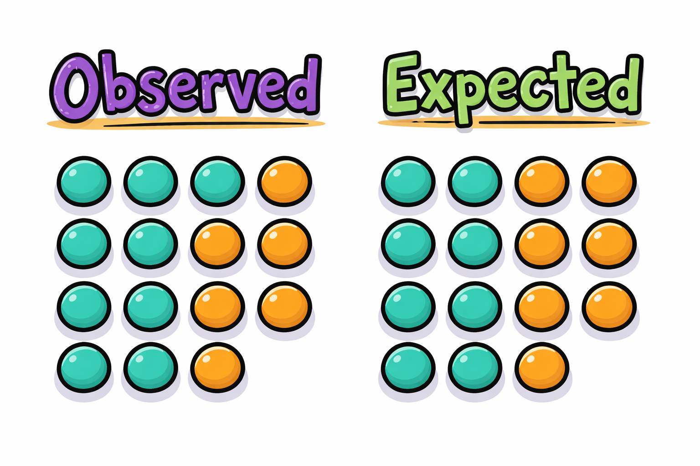
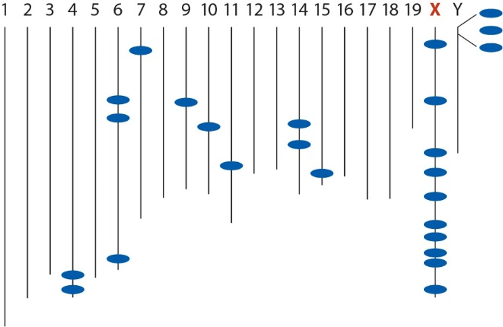
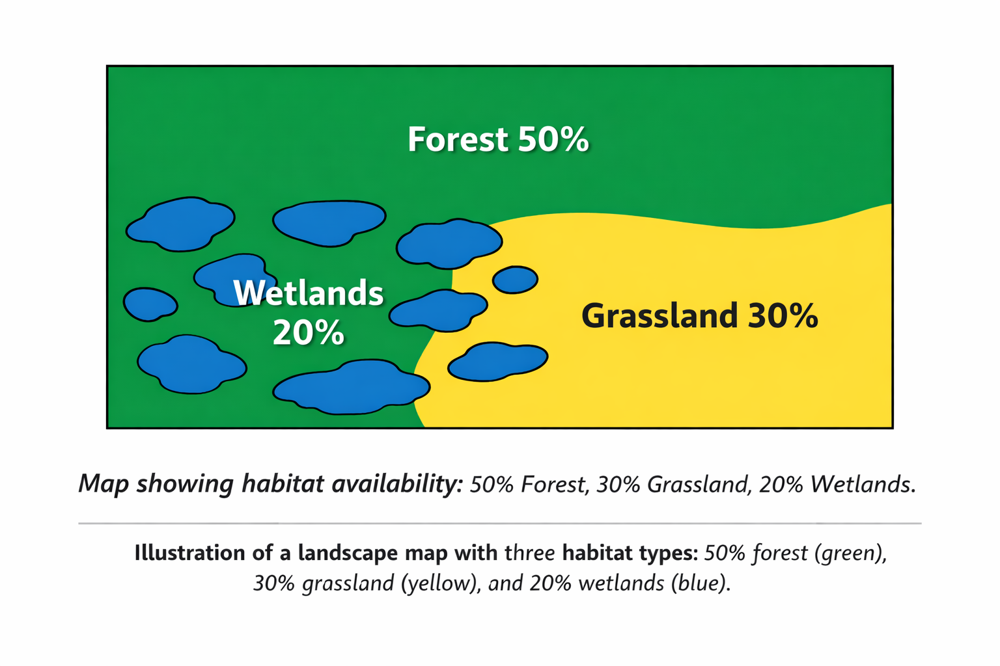
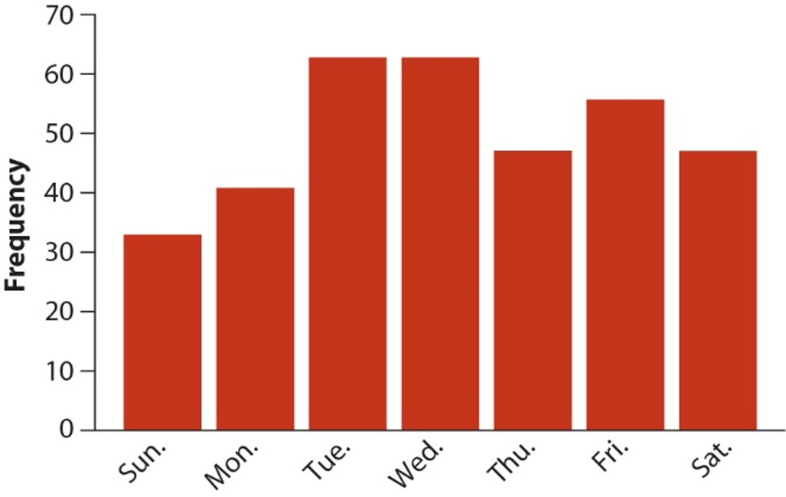
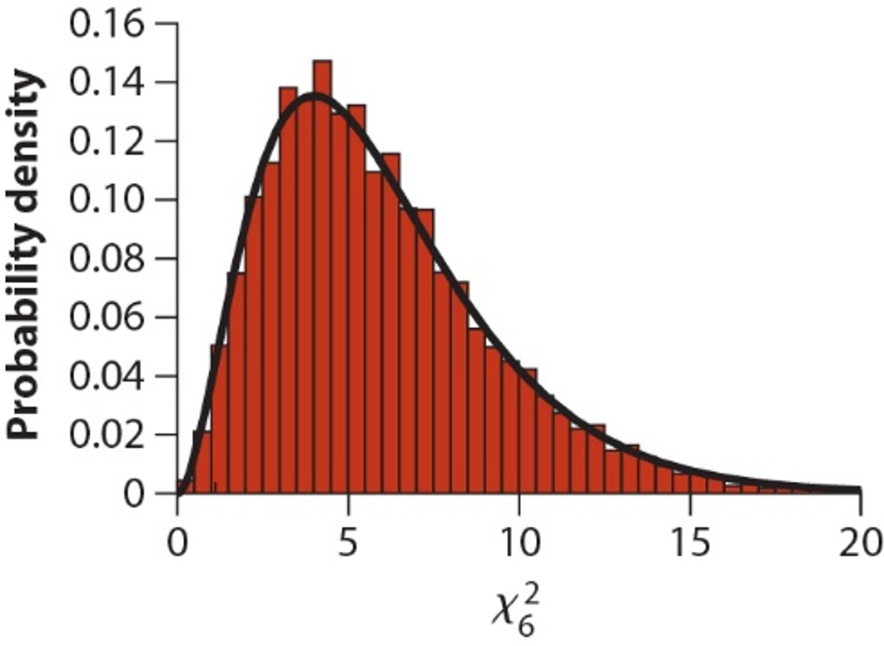
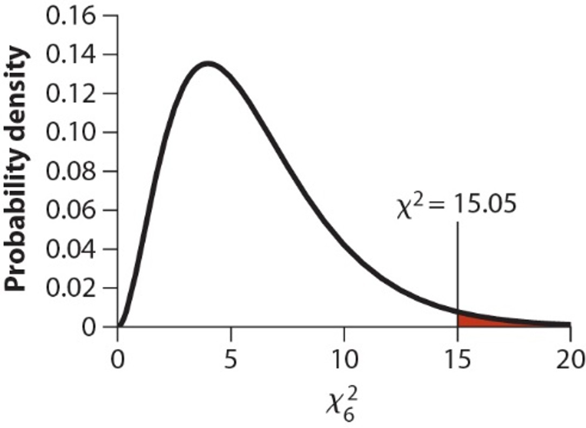

Lecture 10
Fitting Probability Models
to Frequency Data
Fitting Probability Models
to Frequency Data
ABD 3e Chapter 8
Learning Objectives
By the end of this lecture, you should be able to:
- Define frequency data and a proportional model.
- State the null and alternative hypotheses for a chi-squared goodness-of-fit test.
- Calculate expected counts under a specified probability model.
- Compute and interpret the chi-squared test statistic.
- Determine a \(P\)-value or critical value and draw a conclusion.
- Evaluate whether the assumptions of the chi-squared test are met.
- Distinguish among the binomial test, chi-squared test for proportions, and chi-squared test of independence.
When Do Observed Counts Match What We Expect?
In biology, we often observe counts in categories:
- Births by day of week
- Genes on chromosomes
- Animals by habitat type
- Individuals by behavior
But a key question is:
Do the observed counts match what we would expect under a probability model?
This is the central idea behind the chi-squared goodness-of-fit test.

What is Frequency Data?
Frequency data = counts of observations in each category of a single categorical variable.
- One variable
- Several levels (categories)
Each row in the table tells us:
- How many observations fall into that category?
Frequency table showing the activities of 88 people at the time they were attacked and killed by tigers near Chitwan National Park, Nepal, from 1979 to 2006 (Table 2.2-1, Whitlock & Schluter 2015)
| Activity | Frequency (number of people) |
|---|---|
| Collecting grass or fodder for livestock | 44 |
| Collecting non-timber forest products | 11 |
| Fishing | 8 |
| Herding livestock | 7 |
| Disturbing tiger at its kill | 5 |
| Collecting fuel wood or timber | 5 |
| Sleeping in a house | 5 |
| Walking in forest | 3 |
| Using an outside toilet | 2 |
| Total | 88 |
And what is a model?
A model is a simplified description of a system used to:
- Explain patterns
- Make predictions
- Test ideas
Types of models:
- Physical model – tangible representation
- Verbal model – conceptual explanation
- Mathematical model – uses equations or probabilities to make precise predictions
In this course, we focus on probability models.
A probability model describes how likely various outcomes are
Example of a probability model: binomial model for spermatogenesis genes
- Number of genes on chromosomes should be proportional to their length.
- Long chromosome → more genes.
- X chromosome is short → should have few genes.
- If spermatogenesis genes were randomly distributed throughout the genome, the X chromosome should have relatively few (≈ 1.5 genes).

The proportional model
In many biological problems, the null hypothesis assumes that outcomes occur in fixed proportions.
A proportional model states that:
- Each category has an expected proportion.
- The expected number of observations in each category depends on:
- The total sample size
- The proportion assigned to that category.
We compare observed counts to these expected counts.
The binomial model is a special case with two categories.

Example: A Proportional Model with More Than Two Categories
Observed data: number of births on each day of the week.
Null hypothesis (proportional model):
- Births are equally likely on each day.
- Each day should account for about one-seventh of all births.
If the model is correct:
- Observed frequencies should be close to equal.
- Large deviations suggest the model may not fit.
Do these data appear consistent with equal proportions?
\(n=350\) births in the U.S. in 1999

The Chi-Squared Goodness-of-Fit Test
The chi-squared goodness-of-fit test evaluates whether observed frequency data are consistent with a specified probability model.
It is used when:
- We have one categorical variable.
- We have counts in two or more categories.
- The null hypothesis specifies expected proportions.
It asks:
Are the observed frequencies close enough to what the model predicts?
Step 1: State the Null Model
Example: births by day of the week
Null hypothesis (proportional model):
\(H_0\): Births are equally likely on each day of the week.
Alternative hypothesis:
\(H_A\): Births are not equally likely on each day of the week.
To compute expected frequencies, we use the proportions specified by the null model
- Important: These data come from a single calendar year (1999)
- 1999 had 365 days.
- Not every day of the week occurred exactly 1/7 of the time
- Friday occurred 53 times; all other days occurred 52 times
- Under \(H_0\):
Expected proportion for a day = (number of that day in 1999) / 365
Expected count = total births × that proportion
Proportions are therefore not exactly 1/7
| Day | Number of days in 1999 | Proportion of days in 1999 | Expected frequency of births |
|---|---|---|---|
| Sunday | 52 | 52/365 | 49.863 |
| Monday | 52 | 52/365 | 49.863 |
| Tuesday | 52 | 52/365 | 49.863 |
| Wednesday | 52 | 52/365 | 49.863 |
| Thursday | 52 | 52/365 | 49.863 |
| Friday | 53 | 53/365 | 50.822 |
| Saturday | 52 | 52/365 | 49.863 |
| Sum | 365 | 1 | 350 |
Measuring discrepancy
We need a way to measure the discrepancy between:
- Observed frequencies (data)
- Expected frequencies (null hypothesis)
The chi-square statistic measures total discrepancy across all categories.
\[ \chi^2 = \sum \frac{(O - E)^2}{E} \]
For each category:
- Subtract expected from observed
- Square the difference
- Scale by the expected count
- Add across all categories
Large values of \(\chi^2\) indicate greater disagreement with the model.
Example: One Category’s Contribution to \(\chi^2\)
Let’s calculate the chi-squared contribution for Sunday.
Observed births:
\(O = 33\)
Expected births:
\(E = 49.863\)
We plug these into the formula:
\[ \frac{(O - E)^2}{E} \]
\[ \frac{(33 - 49.863)^2}{49.863} \\=\frac{(-16.863)^2}{49.863} \\=\frac{284.36}{49.863} \\\approx 5.70 \]
Sunday contributes 5.70 to the total chi-squared statistic.
The total \(\chi^2\) is the sum of all days’ contributions.
Summing Category Contributions to Obtain \(\chi^2\)
- We repeat for each day of the week
- The chi-squared statistic is the sum of all category contributions:
\[ \chi^2 = \sum \frac{(O - E)^2}{E} \]
- Adding the daily contributions gives:
\[ \chi^2 = 15.05 \]
This value summarizes the total discrepancy between observed and expected frequencies.
| Day | Observed number of births | Expected number of births | \[ \frac{(O - E)^2}{E} \] |
|---|---|---|---|
| Sunday | 33 | 49.863 | 5.70 |
| Monday | 41 | 49.863 | 1.58 |
| Tuesday | 63 | 49.863 | 3.46 |
| Wednesday | 63 | 49.863 | 3.46 |
| Thursday | 47 | 49.863 | 0.16 |
| Friday | 56 | 50.822 | 0.53 |
| Saturday | 47 | 49.863 | 0.16 |
| Sum | 1 | 350 | 15.05 |
The sampling distribution of \(\chi^2\) under the null hypothesis
Assume the null hypothesis is true.
If we repeatedly take random samples of \(n = 350\) births and compute \(\chi^2\) each time:
- The test statistic varies from sample to sample.
- The collection of those values forms a sampling distribution.
Tells us how unusual our observed \(\chi^2\) value would be under \(H_0\).

There are many \(\chi^2\) sampling distributions – one for each degrees of freedom
- To find which \(\chi^2\) distribution you should use, calculate the degrees of freedom
\[ df=\\(\text{Number of categories})-1\\-(\text{Number of parameters}\\\text{ estimated from the data}) \]
\[ df = 7-1-0=6 \]
- Write as \(\chi^2_{df}\) , for example \(\chi^2_{6}\)
Calculating the \(P\)-Value
- The \(P\)-value is the probability of obtaining a test statistic at least as large as the observed value, assuming \(H_0\) is true.
- For the chi-squared test:
- Larger \(\chi^2\) values indicate greater disagreement with the null model.
- If observed = expected, then \(\chi^2 = 0\).
- As discrepancy increases, \(\chi^2\) increases.
- Therefore: \[ P = \operatorname{Pr}(\chi^2 \ge 15.05 \mid H_0) \]
- We calculate this probability using the right tail of the \(\chi^2\) distribution.
- The red region shows the \(P\)-value.

Making a Decision: Compare \(P\) to \(\alpha\)
Choose a significance level \(\alpha\) (e.g., 0.05).
Decision rule:
- If \(P \le \alpha\), reject \(H_0\).
- If \(P > \alpha\), fail to reject \(H_0\).
When using software:
- The \(P\)-value is computed directly.
- Compare it to \(\alpha\) to make your decision.
When working by hand:
- Instead of computing \(P\), compare the test statistic to a critical value.
- The critical value marks the boundary between rejecting and not rejecting \(H_0\).
- Look up the critical value in a chi-squared table (using the correct degrees of freedom).
Both approaches lead to the same conclusion.
In general, a critical value is the value of a test statistic that marks the boundary of a specified area in the tail (or tails) of the sampling distribution under \(H_0\).
Finding a Critical Value in a Chi-Squared Table
Determine the degrees of freedom:
- \(df = k - 1\)
- Here, \(df = 6\)
Choose a significance level:
- \(\alpha = 0.05\)
Locate the intersection of:
- Row for \(df = 6\)
- Column for \(\alpha = 0.05\)

The critical value is:
\[ \chi^2_{0.05,\,6} = 12.59 \]
Decision rule:
- Reject \(H_0\) if \(\chi^2 \ge 12.59\)
Interpreting the Result
After comparing \(P\) to \(\alpha\):
If \(P \le \alpha\):
Reject \(H_0\).
The data provide evidence that the observed frequencies differ from the proportions specified by the null model.
If \(P > \alpha\):
Fail to reject \(H_0\).
The data are consistent with the null model.
Example:
- Since \(\chi^2 = 15.05\) exceeds the critical value of 12.59 (and \(P < 0.05\)), we reject \(H_0\) and conclude that births were not equally distributed across days of the week in 1999.
Important:
Rejecting \(H_0\) does not prove the model is false.
Failing to reject \(H_0\) does not prove the model is true.
We are evaluating evidence, not proving certainty.
Assumptions of the Chi-Squared Goodness-of-Fit Test
For the chi-squared approximation to be valid:
1. Independence
- Observations are independent.
- Data represent a random sample.
2. Correct null model
- The null hypothesis specifies the expected proportions.
3. Expected count conditions
- All expected counts must be ≥ 1.
- No more than 20% of expected counts may be < 5.
Comparing Tests for Proportions and Frequency Data
How These Tests Fit Together
| Test | Scientific Question | Data Structure | Distribution Used | Lecture | R Function |
|---|---|---|---|---|---|
| Binomial test | Is a single proportion equal to a hypothesized value (e.g., \(p = 0.3\))? | One group, two outcomes | Exact binomial | Lecture 9 | binom.test() |
| Chi-squared test for proportions | Is a proportion equal to a hypothesized value (large \(n\)), or do two group proportions differ? | One or two groups, two outcomes | Chi-squared (approximation) | Lecture 10 | prop.test() |
| Chi-squared test of independence | Are two categorical variables associated? | Two variables, \(r \times c\) table | Chi-squared | Lecture 12 | chisq.test() |
Notes:
- For a 2 × 2 table,
prop.test()and the chi-squared test of independence are mathematically equivalent. - In lab, we used
prop.test()because our sample size was large, making the chi-squared approximation appropriate and computationally efficient.